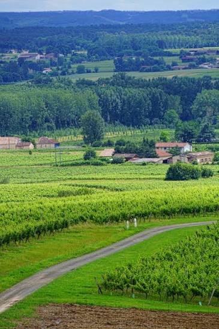

Vin de pays
du Tarn-et-Garonne


⟹ Vins & Spiritueux ⟸
Terre de vergers avant tout, le Tarn-et-Garonne est aussi une terre de vignes. Entre les terrasses de la Garonne, du Tarn et de l’Aveyron, les coteaux du Quercy et ceux de la Lomagne, la vigne accompagne depuis des siècles la polyculture de ce département né en 1808 de pièces détachées du Quercy, de la Gascogne et du Languedoc.

Pendant longtemps, l’essentiel de la production est un vin de consommation familiale ou locale, élaboré par des exploitations qui associent céréales, fruits et élevage. Les vins voyagent peu, à l’exception de ceux des vallées qui, comme le Brulhois ou le Frontonnais, profitent du fleuve et de la proximité de Toulouse.
La notion de « vin de pays » naît en France dans les années 1970 pour distinguer, au sein des vins de table, ceux qui portent une origine géographique et respectent des règles de production. En 1982, le vin de pays du Comté Tolosan est créé : c’est le deuxième vin de pays reconnu en France. Son nom rappelle l’ancien comté de Toulouse, capitale historique des vins du Sud-Ouest.
À côté de cette grande dénomination régionale, le département dispose de ses propres vins de pays : le vin de pays du Tarn-et-Garonne, à l’échelle du département, et le vin de pays des Coteaux et Terrasses de Montauban, produit autour de la préfecture, sur les communes du Montalbanais.
La réforme européenne de l’organisation du marché du vin, en 2009, transforme les vins de pays en indications géographiques protégées (IGP). Les anciennes dénominations départementales sont alors regroupées : le vin de pays du Tarn-et-Garonne devient l’IGP « Comté Tolosan – Tarn-et-Garonne », et celui de Montauban l’IGP « Comté Tolosan – Coteaux et Terrasses de Montauban ».
Ces mentions sont des unités géographiques : elles précisent l’origine au sein d’une IGP qui couvre douze départements du grand Sud-Ouest. Pour porter la mention « Tarn-et-Garonne », la vinification et l’élaboration doivent avoir lieu dans le département ; pour « Coteaux et Terrasses de Montauban », sur une liste de communes du Montalbanais, dont Montauban, Léojac et Lamothe-Capdeville.
La grande force de ces vins tient à leur liberté d’encépagement. Là où les appellations voisines imposent leurs cépages — la négrette à Fronton, le côt à Cahors, le tannat dans le Brulhois —, l’IGP autorise une large palette de variétés locales et internationales, et la mention du cépage sur l’étiquette. Les vignerons y trouvent un espace d’expérimentation et de création.
Le Tarn-et-Garonne se trouve d’ailleurs au carrefour de plusieurs appellations : une partie du Fronton, l’AOC Saint-Sardos, une partie des Coteaux du Quercy et le Brulhois. Beaucoup de domaines produisent à la fois des vins d’appellation et des vins en IGP, ces derniers servant souvent de vins plaisir, de cuvées de cépage ou de rosés d’été.
Rouges légers et gouleyants, rosés pâles, blancs secs aromatiques, primeurs à la fin de l’automne et même vins effervescents : le vin de pays du Tarn-et-Garonne est le vin du quotidien et de la convivialité, celui des marchés de plein vent, des fêtes de village et des tables familiales.
IGP Comté Tolosan – Tarn-et-Garonne : héritière du vin de pays départemental, vinifiée dans le département ; rouges, rosés, blancs, primeurs.
IGP Comté Tolosan – Coteaux et Terrasses de Montauban : héritière de l’ancien vin de pays du Montalbanais, produite sur les communes autour de Montauban.
IGP Comté Tolosan (sans mention) : utilisée par de nombreux domaines du département, notamment pour les assemblages et les vins de cépage.
Primeur ou nouveau : vin jeune et fruité commercialisé dès la fin de l’automne, à boire dans les mois qui suivent.
Mousseux de qualité : effervescent élaboré dans le cadre de l’IGP, pour l’apéritif et les fêtes.
Les appellations voisines : les mêmes vignerons produisent souvent aussi du Fronton, du Saint-Sardos, du Coteaux du Quercy ou du Brulhois.
Les vins de pays du Tarn-et-Garonne se trouvent surtout chez les vignerons, dans les caves coopératives et sur les marchés.
Montauban et le Montalbanais berceau des Coteaux et Terrasses de Montauban, avec des domaines ouverts à la visite autour de la ville.
Vignoble du Frontonnais tarn-et-garonnais (Campsas, Labastide-Saint-Pierre et alentours), où les domaines proposent aussi leurs cuvées IGP.
Saint-Sardos et la Lomagne autour de la cave coopérative de Saint-Sardos, aux portes de Beaumont-de-Lomagne.
Donzac la Cave des Vignerons du Brulhois propose blancs et rosés en IGP aux côtés de son AOP.
Marchés de producteurs de pays l’été, dans les bastides et villages du département, pour déguster sur place.